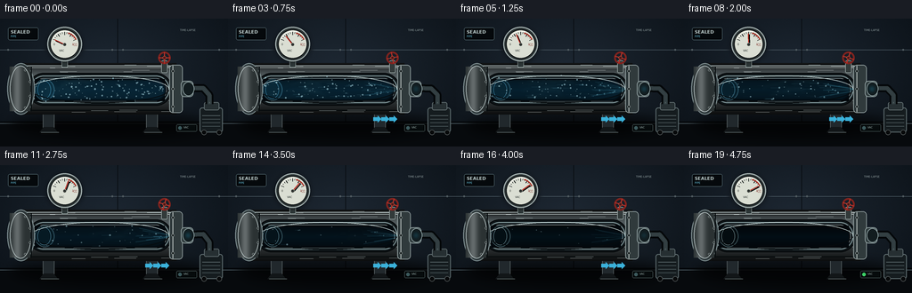
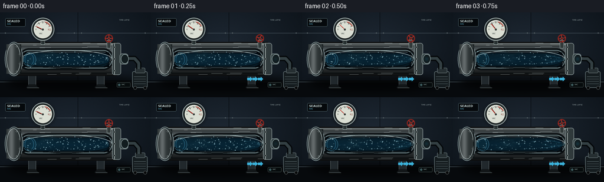

CODING AGENTS AS PIXEL WORLD MODELS
traex/GPT-5.6-Sol · mechanics_0025
点击播放 · 原生 RGB 像素
逐轮保存的候选
回放视频、检查图与代码变化。
每份候选均可单独播放。实际图片检查记录在下方工具轨迹中。
候选 01播放与检查图
点击播放 · 原生 RGB 像素


展开代码变化
--- 上一保存版本
+++ 本次保存版本
@@ -0,0 +1,292 @@
+from pathlib import Path
+import math
+import numpy as np
+from PIL import Image, ImageDraw, ImageFilter, ImageFont
+import artifact_io
+
+# Procedural, deterministic industrial cutaway animation.
+W, H, N = 256, 144, 20
+S = 4
+WS, HS = W*S, H*S
+ROOT = Path(__file__).resolve().parent
+rng = np.random.default_rng(25025)
+
+try:
+ FONT = ImageFont.truetype('/usr/share/fonts/truetype/dejavu/DejaVuSans.ttf', 5*S)
+ FONT_B = ImageFont.truetype('/usr/share/fonts/truetype/dejavu/DejaVuSans-Bold.ttf', 5*S)
+ FONT_TINY = ImageFont.truetype('/usr/share/fonts/truetype/dejavu/DejaVuSans.ttf', 3*S)
+except OSError:
+ FONT = FONT_B = FONT_TINY = ImageFont.load_default()
+
+def sc(v): return int(round(v*S))
+def box(x0,y0,x1,y1): return (sc(x0),sc(y0),sc(x1),sc(y1))
+def pt(x,y): return (sc(x),sc(y))
+
+def line(draw, coords, fill, width=1):
+ draw.line(tuple(sc(v) for v in coords), fill=fill, width=max(1, sc(width)), joint='curve')
+
+def ellipse(draw, coords, fill=None, outline=None, width=1):
+ draw.ellipse(box(*coords), fill=fill, outline=outline, width=max(1, sc(width)))
+
+def rounded(draw, coords, radius, fill=None, outline=None, width=1):
+ draw.rounded_rectangle(box(*coords), radius=sc(radius), fill=fill, outline=outline, width=max(1,sc(width)))
+
+def glow(base, shapes, blur=4):
+ layer = Image.new('RGBA', base.size, (0,0,0,0))
+ d = ImageDraw.Draw(layer)
+ shapes(d)
+ layer = layer.filter(ImageFilter.GaussianBlur(sc(blur)))
+ base.alpha_composite(layer)
+
+# Static stars of dust/air molecules inside. Their end times create a steady density collapse.
+particles = []
+for i in range(115):
+ x = rng.uniform(40, 183)
+ y = rng.uniform(68, 91)
+ size = rng.uniform(.3, 1.05)
+ speed = rng.uniform(42, 92)
+ curve = rng.uniform(-5, 5)
+ phase = rng.uniform(0, 2*math.pi)
+ end = np.clip(rng.beta(1.45, 2.3)*1.08, .13, .97)
+ particles.append((x,y,size,speed,curve,phase,end))
+
+# Fixed fine scratches on steel.
+scratches = [(rng.uniform(25,196), rng.uniform(52,106), rng.uniform(4,28), rng.uniform(.12,.55)) for _ in range(48)]
+
+# Air-wisp control values.
+wisps = [(rng.uniform(38,85), rng.uniform(71,89), rng.uniform(15,36), rng.uniform(-3,3), rng.uniform(0,6.3)) for _ in range(17)]
+
+def draw_background(frame_i):
+ # softly vignetted, textured blue-black workshop
+ yy, xx = np.mgrid[0:HS, 0:WS]
+ radial = np.sqrt(((xx-WS*.48)/(WS*.72))**2 + ((yy-HS*.38)/(HS*.88))**2)
+ light = np.clip(1-radial,0,1)
+ wall = np.empty((HS,WS,3), dtype=np.float32)
+ wall[...,0] = 11 + 18*light
+ wall[...,1] = 17 + 22*light
+ wall[...,2] = 23 + 27*light
+ # subtle exposure pulse suggests timelapse without camera motion
+ wall += 0.8*math.sin(frame_i*.48)
+ static_rng = np.random.default_rng(1000+frame_i)
+ noise = static_rng.normal(0, .72, (HS,WS,1))
+ wall += noise
+ wall = np.clip(wall,0,255).astype(np.uint8)
+ im = Image.fromarray(wall, 'RGB').convert('RGBA')
+ d = ImageDraw.Draw(im, 'RGBA')
+ # wall seams and bolt marks
+ line(d, (0,35,256,35), (91,106,115,25), .5)
+ line(d, (0,116,256,116), (3,6,8,150), 1)
+ line(d, (132,0,132,116), (6,10,14,65), .7)
+ for x,y in [(9,35),(126,35),(138,35),(246,35)]:
+ ellipse(d,(x-1,y-1,x+1,y+1),fill=(83,94,99,80))
+ # floor
+ d.rectangle(box(0,117,256,144), fill=(7,10,13,255))
+ line(d,(0,118,256,118),(80,96,104,60),.7)
+ # cast shadow
+ shadow=Image.new('RGBA',im.size,(0,0,0,0)); sd=ImageDraw.Draw(shadow,'RGBA')
+ ellipse(sd,(13,104,234,135),fill=(0,0,0,150))
+ shadow=shadow.filter(ImageFilter.GaussianBlur(sc(6)))
+ im.alpha_composite(shadow)
+ return im
+
+def draw_pipe(im, t, frame_i):
+ d = ImageDraw.Draw(im, 'RGBA')
+ # support feet behind pipe
+ for x in (48,164):
+ rounded(d,(x,99,x+13,124),2,fill=(33,40,44,255),outline=(85,94,96,180),width=.7)
+ d.polygon([pt(x+1,122),pt(x-4,128),pt(x+17,128),pt(x+12,122)],fill=(18,22,24,255))
+ line(d,(x-2,128,x+18,128),(93,104,105,80),.7)
+ # right suction pump silhouette (attached, not part of sealed chamber)
+ rounded(d,(224,100,250,128),3,fill=(21,28,31,255),outline=(93,107,110,210),width=1)
+ rounded(d,(229,94,246,103),2,fill=(38,47,50,255),outline=(104,117,119,180),width=.7)
+ line(d,(227,109,247,109),(127,143,145,65),.6)
+ # motor cooling fins
+ for yy0 in (113,117,121): line(d,(227,yy0,247,yy0),(100,116,118,100),.55)
+ ellipse(d,(226,125,232,131),fill=(7,9,10,255),outline=(80,87,87,200),width=.7)
+ ellipse(d,(243,125,249,131),fill=(7,9,10,255),outline=(80,87,87,200),width=.7)
+ # suction hose from end fitting to pump. Tiny vibration during strongest flow.
+ strength = (math.sin(math.pi*np.clip((t-.015)/.96,0,1))**.63) * (1-.32*t)
+ vib = math.sin(frame_i*2.7)*.7*strength
+ hose = Image.new('RGBA',im.size,(0,0,0,0)); hd=ImageDraw.Draw(hose,'RGBA')
+ # cubic-ish polyline
+ pts=[pt(214,78),pt(228,78+vib),pt(235,86-vib),pt(235,96)]
+ hd.line(pts,fill=(4,7,9,255),width=sc(9),joint='curve')
+ hd.line(pts,fill=(49,61,64,255),width=sc(5),joint='curve')
+ hd.line(pts,fill=(93,108,109,120),width=sc(1),joint='curve')
+ im.alpha_composite(hose)
+ d=ImageDraw.Draw(im,'RGBA')
+
+ # Main cylindrical pipe body with vertically modeled brushed steel.
+ for y in np.arange(50,108,.5):
+ q=(y-50)/58
+ # hard metallic bands: dark edges, bright upper central reflection
+ lum = 35 + 67*math.exp(-((q-.25)/.20)**2) + 26*math.exp(-((q-.67)/.32)**2) - 31*(abs(q-.5)*2)**2
+ col=(int(lum*.82),int(lum*.91),int(lum*.94),255)
+ d.line((sc(22),sc(y),sc(198),sc(y)),fill=col,width=max(1,sc(.55)))
+ # top specular bands
+ line(d,(27,53,195,53),(199,214,214,95),.7)
+ line(d,(28,55,194,55),(229,238,236,40),.5)
+ line(d,(28,103,195,103),(4,9,11,150),1)
+ # brushed hairline scratches
+ for x,y,ln,a in scratches:
+ line(d,(x,y,min(x+ln,196),y),(215,226,225,int(70*a)),.28)
+ # side cutaway aperture and substantial metal rim
+ rounded(d,(31,61,193,98),18,fill=(15,22,25,255),outline=(6,9,11,255),width=1.3)
+ rounded(d,(34,64,190,95),15,fill=(4,11,15,255),outline=(121,142,145,190),width=1.3)
+ rounded(d,(37,67,187,93),12.5,fill=(3,10,15,255),outline=(201,214,212,65),width=.55)
+ # interior cylindrical shading
+ for y in np.arange(68,93,.5):
+ q=(y-68)/25
+ val=10 + 11*(1-abs(q-.5)*2)
+ d.line((sc(39),sc(y),sc(185),sc(y)),fill=(2,int(val*.65),int(val),255),width=sc(.55))
+ # inner back-wall receding rings reinforce empty pipe geometry
+ ellipse(d,(39,68,61,92),fill=(4,12,16,170),outline=(70,95,100,90),width=.65)
+ ellipse(d,(42,70,57,90),outline=(126,152,154,35),width=.45)
+
+ # Air mass: haze collapses nonlinearly as vacuum develops.
+ air = max(0, 1 - (t/0.90)**1.18)
+ air_layer=Image.new('RGBA',im.size,(0,0,0,0)); ad=ImageDraw.Draw(air_layer,'RGBA')
+ rounded(ad,(38,68,186,92),12,fill=(23,121,171,int(55*air)))
+ # rolling wisp filaments advected strongly to outlet
+ for j,(x0,y0,L,curve,ph) in enumerate(wisps):
+ if t < .92-(j%5)*.035:
+ adv=(t*116*(.72+(j%4)*.12))
+ x=x0+adv
+ # wrap only while chamber still dense; wrapped filaments fade
+ if x>175: x=48+(x-175)*.18
+ y=y0+curve*math.sin(t*8+ph)
+ alpha=int(75*air*(.7+.3*math.sin(ph+t*4)**2))
+ ad.arc(box(x,y-5,min(184,x+L),y+5),190,345,fill=(91,206,245,alpha),width=sc(.55))
+ air_layer=air_layer.filter(ImageFilter.GaussianBlur(sc(1.45)))
+ im.alpha_composite(air_layer)
+
+ # particles and motion streaks flow toward extraction. No replenishment: each vanishes.
+ p_layer=Image.new('RGBA',im.size,(0,0,0,0)); pd=ImageDraw.Draw(p_layer,'RGBA')
+ for j,(x0,y0,sz,speed,curve,ph,end) in enumerate(particles):
+ if t >= end: continue
+ progress=t/max(end,.01)
+ # Accelerating rightward pull, converging on outlet center.
+ x=x0 + speed*(t**1.45) + 15*t*t
+ x=40+((x-40)%145)
+ converge=max(0,(x-145)/42)
+ y=y0 + curve*math.sin(ph+t*5)*(1-converge) + (80-y0)*converge*.85
+ fade=min(1,(end-t)/.07)
+ a=int(165*fade*(.7+.3*air))
+ r=sz
+ # velocity trail becomes longer at peak extraction
+ trail=(1.0+6.5*strength)*(0.5+r)
+ pd.line((sc(x-trail),sc(y),sc(x),sc(y)),fill=(114,211,241,int(a*.45)),width=max(1,sc(r*.45)))
+ ellipse(pd,(x-r,y-r,x+r,y+r),fill=(183,232,245,a))
+ # funnel streaks at outlet make force direction unmistakable
+ if strength>.06:
+ for k in range(10):
+ yy0=70+k*2.15 + 1.2*math.sin(frame_i*.9+k)
+ x0=152+(k%4)*4
+ endx=192
+ endy=80+(yy0-80)*.14
+ alpha=int(105*strength*(.6+.4*((k*37)%10)/10))
+ pd.line((sc(x0),sc(yy0),sc(endx),sc(endy)),fill=(89,205,242,alpha),width=sc(.55+(k%3)*.18))
+ p_layer=p_layer.filter(ImageFilter.GaussianBlur(sc(.22)))
+ im.alpha_composite(p_layer)
+ d=ImageDraw.Draw(im,'RGBA')
+
+ # aperture lip gleam after air layers
+ d.arc(box(34,64,190,95),181,356,fill=(198,215,214,125),width=sc(.7))
+ d.arc(box(34,64,190,95),4,179,fill=(6,10,12,220),width=sc(1.1))
+ # left welded sealed cap and collar
+ ellipse(d,(8,50,39,108),fill=(45,55,58,255),outline=(127,143,145,220),width=1)
+ for x in np.arange(11,34,.55):
+ q=(x-11)/23
+ lum=int(43+57*math.exp(-((q-.36)/.22)**2))
+ line(d,(x,54,x,104),(lum,lum+7,lum+8,255),.7)
+ ellipse(d,(11,53,35,105),outline=(189,202,202,95),width=.75)
+ line(d,(35,54,35,104),(7,12,14,210),1.2)
+ # left cap bolts
+ for ang in (-62,-20,20,62):
+ a=math.radians(ang); bx=23+11*math.cos(a); by=79+24*math.sin(a)
+ ellipse(d,(bx-1.1,by-1.1,bx+1.1,by+1.1),fill=(23,29,31,255),outline=(161,172,171,180),width=.45)
+ # right flange and extraction throat
+ rounded(d,(190,52,205,106),4,fill=(48,58,60,255),outline=(155,169,169,190),width=.8)
+ line(d,(194,53,194,105),(220,228,225,100),.65)
+ for yy0 in (59,79,99):
+ ellipse(d,(192.5,yy0-1.5,195.5,yy0+1.5),fill=(21,27,28,255),outline=(166,176,174,170),width=.4)
+ rounded(d,(203,70,217,88),4,fill=(50,62,64,255),outline=(157,173,173,200),width=.8)
+ ellipse(d,(205,71,218,87),fill=(18,28,31,255),outline=(155,174,175,160),width=.7)
+ # tiny cyan glint at suction mouth
+ glow(im, lambda gd: ellipse(gd,(207,75,215,83),fill=(42,187,237,int(95*strength))), 2.3)
+
+ # Valve stem and red hand wheel above outlet, subtly turns during opening.
+ d=ImageDraw.Draw(im,'RGBA')
+ rounded(d,(181,47,188,61),1.5,fill=(50,58,58,255),outline=(144,157,156,190),width=.65)
+ angle=min(1,t/.22)*1.9
+ cx,cy=184.5,44
+ ellipse(d,(177.5,37,191.5,51),outline=(128,35,30,255),width=2)
+ for k in range(4):
+ aa=angle+k*math.pi/2
+ line(d,(cx,cy,cx+6.5*math.cos(aa),cy+6.5*math.sin(aa)),(181,48,40,255),1.2)
+ ellipse(d,(182.5,42,186.5,46),fill=(84,25,23,255),outline=(222,89,65,230),width=.6)
+
+ return air, strength
+
+def draw_gauge(im,t):
+ d=ImageDraw.Draw(im,'RGBA')
+ # stem and gauge mounting tube
+ rounded(d,(69,43,76,55),1.5,fill=(47,57,58,255),outline=(144,157,156,180),width=.7)
+ # gauge drop shadow
+ glow(im, lambda gd: ellipse(gd,(53,10,92,49),fill=(0,0,0,130)), 3)
+ d=ImageDraw.Draw(im,'RGBA')
+ ellipse(d,(53,9,92,48),fill=(42,50,51,255),outline=(162,175,174,255),width=1.2)
+ ellipse(d,(56,12,89,45),fill=(218,222,211,255),outline=(11,16,17,255),width=1)
+ # dial lower arc tick marks; sweep from left NORMAL to right VAC.
+ cx,cy=72.5,29
+ for k in range(13):
+ ang=math.radians(205 + k*(130/12))
+ r0=12.2 if k%3 else 10.8; r1=14.3
+ line(d,(cx+r0*math.cos(ang),cy+r0*math.sin(ang),cx+r1*math.cos(ang),cy+r1*math.sin(ang)),(18,24,24,255),.45 if k%3 else .75)
+ # red deep-vacuum band
+ d.arc(box(58,15,87,44),286,335,fill=(172,44,33,255),width=sc(1.15))
+ d.text(pt(66.2,34), 'VAC', font=FONT_TINY, fill=(40,48,46,255))
+ d.text(pt(60.0,27), '0', font=FONT_TINY, fill=(45,50,48,230))
+ d.text(pt(81.0,27), 'â', font=FONT_TINY, fill=(125,37,31,255))
+ # needle sweeps dramatically with air removal
+ v=min(1,(t/.91)**.90)
+ ang=math.radians(205+128*v)
+ # shadow needle
+ line(d,(cx+1,cy+1,cx+12.2*math.cos(ang)+1,cy+12.2*math.sin(ang)+1),(0,0,0,80),1.2)
+ line(d,(cx,cy,cx+12.2*math.cos(ang),cy+12.2*math.sin(ang)),(190,40,29,255),1)
+ ellipse(d,(70.4,26.9,74.6,31.1),fill=(48,52,49,255),outline=(198,203,192,255),width=.5)
+ # glass highlight
+ d.arc(box(58,14,88,44),205,288,fill=(255,255,248,125),width=sc(.7))
+
+def draw_overlay(im,t,air,strength):
+ d=ImageDraw.Draw(im,'RGBA')
+ # compact explanatory instrumentation label, akin documentary footage.
+ rounded(d,(9,10,43,24),2,fill=(5,9,12,170),outline=(92,116,123,100),width=.5)
+ d.text(pt(12,12), 'SEALED',font=FONT_B,fill=(195,211,210,235))
+ d.text(pt(12,18), 'PIPE',font=FONT_TINY,fill=(104,197,224,230))
+ # Timelapse progression not bar-like UI: small practical recording stamp.
+ d.text(pt(202,11), 'TIME-LAPSE',font=FONT_TINY,fill=(145,159,160,150))
+ # subtle arrows only during active extraction, integrated beneath hose
+ if strength>.08:
+ a=int(115*strength)
+ for x in (163,172,181):
+ d.polygon([pt(x,111),pt(x+5,111),pt(x+5,109),pt(x+9,113),pt(x+5,117),pt(x+5,115),pt(x,115)],fill=(58,177,218,a))
+ # final near-vacuum status lamp turns green in last frames
+ rounded(d,(198,119,221,127),1.5,fill=(6,11,12,205),outline=(81,99,99,130),width=.5)
+ ellipse(d,(200,121,204,125),fill=(60, 208 if t>.86 else 89, 102 if t>.86 else 92,255))
+ d.text(pt(206,120.4),'VAC',font=FONT_TINY,fill=(154,174,171,210))
+
+frames=[]
+for i in range(N):
+ t=i/(N-1)
+ im=draw_background(i)
+ air,strength=draw_pipe(im,t,i)
+ draw_gauge(im,t)
+ draw_overlay(im,t,air,strength)
+ # Mild optical bloom/highlight and downsample for clean antialiasing.
+ rgb=im.convert('RGB').resize((W,H),Image.Resampling.LANCZOS)
+ frames.append(np.asarray(rgb,dtype=np.uint8))
+
+frames=np.stack(frames)
+artifact_io.save(frames, ROOT)
+print(f'saved {frames.shape} RGB frames to {ROOT}')
可观测工具轨迹
实际执行的命令与返回图片。
命令 1exit 0
/bin/bash -lc "cat prompt.txt && printf '\\n--- GENERATION_RULES.md ---\\n' && cat GENERATION_RULES.md && printf '\\n--- task_spec.json ---\\n' && cat task_spec.json"
命令 2exit 0
/bin/bash -lc "find . -maxdepth 3 -type f -printf '%p\\n' | sort && printf '\\n--- binaries ---\\n' && command -v ffmpeg || true && command -v python3 || true"
命令 3exit 0
/bin/bash -lc 'cat artifact_io.py'
命令 4exit 0
/bin/bash -lc "cat > generate.py <<'PY'
from pathlib import Path
import math
import numpy as np
from PIL import Image, ImageDraw, ImageFilter, ImageFont
import artifact_io
# Procedural, deterministic industrial cutaway animation.
W, H, N = 256, 144, 20
S = 4
WS, HS = W*S, H*S
ROOT = Path(__file__).resolve().parent
rng = np.random.default_rng(25025)
try:
FONT = ImageFont.truetype('/usr/share/fonts/truetype/dejavu/DejaVuSans.ttf', 5*S)
FONT_B = ImageFont.truetype('/usr/share/fonts/truetype/dejavu/DejaVuSans-Bold.ttf', 5*S)
FONT_TINY = ImageFont.truetype('/usr/share/fonts/truetype/dejavu/DejaVuSans.ttf', 3*S)
except OSError:
FONT = FONT_B = FONT_TINY = ImageFont.load_default()
def sc(v): return int(round(v*S))
def box(x0,y0,x1,y1): return (sc(x0),sc(y0),sc(x1),sc(y1))
def pt(x,y): return (sc(x),sc(y))
def line(draw, coords, fill, width=1):
draw.line(tuple(sc(v) for v in coords), fill=fill, width=max(1, sc(width)), joint='curve')
def ellipse(draw, coords, fill=None, outline=None, width=1):
draw.ellipse(box(*coords), fill=fill, outline=outline, width=max(1, sc(width)))
def rounded(draw, coords, radius, fill=None, outline=None, width=1):
draw.rounded_rectangle(box(*coords), radius=sc(radius), fill=fill, outline=outline, width=max(1,sc(width)))
def glow(base, shapes, blur=4):
layer = Image.new('RGBA', base.size, (0,0,0,0))
d = ImageDraw.Draw(layer)
shapes(d)
layer = layer.filter(ImageFilter.GaussianBlur(sc(blur)))
base.alpha_composite(layer)
# Static stars of dust/air molecules inside. Their end times create a steady density collapse.
particles = []
for i in range(115):
x = rng.uniform(40, 183)
y = rng.uniform(68, 91)
size = rng.uniform(.3, 1.05)
speed = rng.uniform(42, 92)
curve = rng.uniform(-5, 5)
phase = rng.uniform(0, 2*math.pi)
end = np.clip(rng.beta(1.45, 2.3)*1.08, .13, .97)
particles.append((x,y,size,speed,curve,phase,end))
# Fixed fine scratches on steel.
scratches = [(rng.uniform(25,196), rng.uniform(52,106), rng.uniform(4,28), rng.uniform(.12,.55)) for _ in range(48)]
# Air-wisp control values.
wisps = [(rng.uniform(38,85), rng.uniform(71,89), rng.uniform(15,36), rng.uniform(-3,3), rng.uniform(0,6.3)) for _ in range(17)]
def draw_background(frame_i):
# softly vignetted, textured blue-black workshop
yy, xx = np.mgrid[0:HS, 0:WS]
radial = np.sqrt(((xx-WS*.48)/(WS*.72))**2 + ((yy-HS*.38)/(HS*.88))**2)
light = np.clip(1-radial,0,1)
wall = np.empty((HS,WS,3), dtype=np.float32)
wall[...,0] = 11 + 18*light
wall[...,1] = 17 + 22*light
wall[...,2] = 23 + 27*light
# subtle exposure pulse suggests timelapse without camera motion
wall += 0.8*math.sin(frame_i*.48)
static_rng = np.random.default_rng(1000+frame_i)
noise = static_rng.normal(0, .72, (HS,WS,1))
wall += noise
wall = np.clip(wall,0,255).astype(np.uint8)
im = Image.fromarray(wall, 'RGB').convert('RGBA')
d = ImageDraw.Draw(im, 'RGBA')
# wall seams and bolt marks
line(d, (0,35,256,35), (91,106,115,25), .5)
line(d, (0,116,256,116), (3,6,8,150), 1)
line(d, (132,0,132,116), (6,10,14,65), .7)
for x,y in [(9,35),(126,35),(138,35),(246,35)]:
ellipse(d,(x-1,y-1,x+1,y+1),fill=(83,94,99,80))
# floor
d.rectangle(box(0,117,256,144), fill=(7,10,13,255))
line(d,(0,118,256,118),(80,96,104,60),.7)
# cast shadow
shadow=Image.new('RGBA',im.size,(0,0,0,0)); sd=ImageDraw.Draw(shadow,'RGBA')
ellipse(sd,(13,104,234,135),fill=(0,0,0,150))
shadow=shadow.filter(ImageFilter.GaussianBlur(sc(6)))
im.alpha_composite(shadow)
return im
def draw_pipe(im, t, frame_i):
d = ImageDraw.Draw(im, 'RGBA')
# support feet behind pipe
for x in (48,164):
rounded(d,(x,99,x+13,124),2,fill=(33,40,44,255),outline=(85,94,96,180),width=.7)
d.polygon([pt(x+1,122),pt(x-4,128),pt(x+17,128),pt(x+12,122)],fill=(18,22,24,255))
line(d,(x-2,128,x+18,128),(93,104,105,80),.7)
# right suction pump silhouette (attached, not part of sealed chamber)
rounded(d,(224,100,250,128),3,fill=(21,28,31,255),outline=(93,107,110,210),width=1)
rounded(d,(229,94,246,103),2,fill=(38,47,50,255),outline=(104,117,119,180),width=.7)
line(d,(227,109,247,109),(127,143,145,65),.6)
# motor cooling fins
for yy0 in (113,117,121): line(d,(227,yy0,247,yy0),(100,116,118,100),.55)
ellipse(d,(226,125,232,131),fill=(7,9,10,255),outline=(80,87,87,200),width=.7)
ellipse(d,(243,125,249,131),fill=(7,9,10,255),outline=(80,87,87,200),width=.7)
# suction hose from end fitting to pump. Tiny vibration during strongest flow.
strength = (math.sin(math.pi*np.clip((t-.015)/.96,0,1))**.63) * (1-.32*t)
vib = math.sin(frame_i*2.7)*.7*strength
hose = Image.new('RGBA',im.size,(0,0,0,0)); hd=ImageDraw.Draw(hose,'RGBA')
# cubic-ish polyline
pts=[pt(214,78),pt(228,78+vib),pt(235,86-vib),pt(235,96)]
hd.line(pts,fill=(4,7,9,255),width=sc(9),joint='curve')
hd.line(pts,fill=(49,61,64,255),width=sc(5),joint='curve')
hd.line(pts,fill=(93,108,109,120),width=sc(1),joint='curve')
im.alpha_composite(hose)
d=ImageDraw.Draw(im,'RGBA')
# Main cylindrical pipe body with vertically modeled brushed steel.
for y in np.arange(50,108,.5):
q=(y-50)/58
# hard metallic bands: dark edges, bright upper central reflection
lum = 35 + 67*math.exp(-((q-.25)/.20)**2) + 26*math.exp(-((q-.67)/.32)**2) - 31*(abs(q-.5)*2)**2
col=(int(lum*.82),int(lum*.91),int(lum*.94),255)
d.line((sc(22),sc(y),sc(198),sc(y)),fill=col,width=max(1,sc(.55)))
# top specular bands
line(d,(27,53,195,53),(199,214,214,95),.7)
line(d,(28,55,194,55),(229,238,236,40),.5)
line(d,(28,103,195,103),(4,9,11,150),1)
# brushed hairline scratches
for x,y,ln,a in scratches:
line(d,(x,y,min(x+ln,196),y),(215,226,225,int(70*a)),.28)
# side cutaway aperture and substantial metal rim
rounded(d,(31,61,193,98),18,fill=(15,22,25,255),outline=(6,9,11,255),width=1.3)
rounded(d,(34,64,190,95),15,fill=(4,11,15,255),outline=(121,142,145,190),width=1.3)
rounded(d,(37,67,187,93),12.5,fill=(3,10,15,255),outline=(201,214,212,65),width=.55)
# interior cylindrical shading
for y in np.arange(68,93,.5):
q=(y-68)/25
val=10 + 11*(1-abs(q-.5)*2)
d.line((sc(39),sc(y),sc(185),sc(y)),fill=(2,int(val*.65),int(val),255),width=sc(.55))
# inner back-wall receding rings reinforce empty pipe geometry
ellipse(d,(39,68,61,92),fill=(4,12,16,170),outline=(70,95,100,90),width=.65)
ellipse(d,(42,70,57,90),outline=(126,152,154,35),width=.45)
# Air mass: haze collapses nonlinearly as vacuum develops.
air = max(0, 1 - (t/0.90)**1.18)
air_layer=Image.new('RGBA',im.size,(0,0,0,0)); ad=ImageDraw.Draw(air_layer,'RGBA')
rounded(ad,(38,68,186,92),12,fill=(23,121,171,int(55*air)))
# rolling wisp filaments advected strongly to outlet
for j,(x0,y0,L,curve,ph) in enumerate(wisps):
if t < .92-(j%5)*.035:
adv=(t*116*(.72+(j%4)*.12))
x=x0+adv
# wrap only while chamber still dense; wrapped filaments fade
if x>175: x=48+(x-175)*.18
y=y0+curve*math.sin(t*8+ph)
alpha=int(75*air*(.7+.3*math.sin(ph+t*4)**2))
ad.arc(box(x,y-5,min(184,x+L),y+5),190,345,fill=(91,206,245,alpha),width=sc(.55))
air_layer=air_layer.filter(ImageFilter.GaussianBlur(sc(1.45)))
im.alpha_composite(air_layer)
# particles and motion streaks flow toward extraction. No replenishment: each vanishes.
p_layer=Image.new('RGBA',im.size,(0,0,0,0)); pd=ImageDraw.Draw(p_layer,'RGBA')
for j,(x0,y0,sz,speed,curve,ph,end) in enumerate(particles):
if t >= end: continue
progress=t/max(end,.01)
# Accelerating rightward pull, converging on outlet center.
x=x0 + speed*(t**1.45) + 15*t*t
x=40+((x-40)%145)
converge=max(0,(x-145)/42)
y=y0 + curve*math.sin(ph+t*5)*(1-converge) + (80-y0)*converge*.85
fade=min(1,(end-t)/.07)
a=int(165*fade*(.7+.3*air))
r=sz
# velocity trail becomes longer at peak extraction
trail=(1.0+6.5*strength)*(0.5+r)
pd.line((sc(x-trail),sc(y),sc(x),sc(y)),fill=(114,211,241,int(a*.45)),width=max(1,sc(r*.45)))
ellipse(pd,(x-r,y-r,x+r,y+r),fill=(183,232,245,a))
# funnel streaks at outlet make force direction unmistakable
if strength>.06:
for k in range(10):
yy0=70+k*2.15 + 1.2*math.sin(frame_i*.9+k)
x0=152+(k%4)*4
endx=192
endy=80+(yy0-80)*.14
alpha=int(105*strength*(.6+.4*((k*37)%10)/10))
pd.line((sc(x0),sc(yy0),sc(endx),sc(endy)),fill=(89,205,242,alpha),width=sc(.55+(k%3)*.18))
p_layer=p_layer.filter(ImageFilter.GaussianBlur(sc(.22)))
im.alpha_composite(p_layer)
d=ImageDraw.Draw(im,'RGBA')
# aperture lip gleam after air layers
d.arc(box(34,64,190,95),181,356,fill=(198,215,214,125),width=sc(.7))
d.arc(box(34,64,190,95),4,179,fill=(6,10,12,220),width=sc(1.1))
# left welded sealed cap and collar
ellipse(d,(8,50,39,108),fill=(45,55,58,255),outline=(127,143,145,220),width=1)
for x in np.arange(11,34,.55):
q=(x-11)/23
lum=int(43+57*math.exp(-((q-.36)/.22)**2))
line(d,(x,54,x,104),(lum,lum+7,lum+8,255),.7)
ellipse(d,(11,53,35,105),outline=(189,202,202,95),width=.75)
line(d,(35,54,35,104),(7,12,14,210),1.2)
# left cap bolts
for ang in (-62,-20,20,62):
a=math.radians(ang); bx=23+11*math.cos(a); by=79+24*math.sin(a)
ellipse(d,(bx-1.1,by-1.1,bx+1.1,by+1.1),fill=(23,29,31,255),outline=(161,172,171,180),width=.45)
# right flange and extraction throat
rounded(d,(190,52,205,106),4,fill=(48,58,60,255),outline=(155,169,169,190),width=.8)
line(d,(194,53,194,105),(220,228,225,100),.65)
for yy0 in (59,79,99):
ellipse(d,(192.5,yy0-1.5,195.5,yy0+1.5),fill=(21,27,28,255),outline=(166,176,174,170),width=.4)
rounded(d,(203,70,217,88),4,fill=(50,62,64,255),outline=(157,173,173,200),width=.8)
ellipse(d,(205,71,218,87),fill=(18,28,31,255),outline=(155,174,175,160),width=.7)
# tiny cyan glint at suction mouth
glow(im, lambda gd: ellipse(gd,(207,75,215,83),fill=(42,187,237,int(95*strength))), 2.3)
# Valve stem and red hand wheel above outlet, subtly turns during opening.
d=ImageDraw.Draw(im,'RGBA')
rounded(d,(181,47,188,61),1.5,fill=(50,58,58,255),outline=(144,157,156,190),width=.65)
angle=min(1,t/.22)*1.9
cx,cy=184.5,44
ellipse(d,(177.5,37,191.5,51),outline=(128,35,30,255),width=2)
for k in range(4):
aa=angle+k*math.pi/2
line(d,(cx,cy,cx+6.5*math.cos(aa),cy+6.5*math.sin(aa)),(181,48,40,255),1.2)
ellipse(d,(182.5,42,186.5,46),fill=(84,25,23,255),outline=(222,89,65,230),width=.6)
return air, strength
def draw_gauge(im,t):
d=ImageDraw.Draw(im,'RGBA')
# stem and gauge mounting tube
rounded(d,(69,43,76,55),1.5,fill=(47,57,58,255),outline=(144,157,156,180),width=.7)
# gauge drop shadow
glow(im, lambda gd: ellipse(gd,(53,10,92,49),fill=(0,0,0,130)), 3)
d=ImageDraw.Draw(im,'RGBA')
ellipse(d,(53,9,92,48),fill=(42,50,51,255),outline=(162,175,174,255),width=1.2)
ellipse(d,(56,12,89,45),fill=(218,222,211,255),outline=(11,16,17,255),width=1)
# dial lower arc tick marks; sweep from left NORMAL to right VAC.
cx,cy=72.5,29
for k in range(13):
ang=math.radians(205 + k*(130/12))
r0=12.2 if k%3 else 10.8; r1=14.3
line(d,(cx+r0*math.cos(ang),cy+r0*math.sin(ang),cx+r1*math.cos(ang),cy+r1*math.sin(ang)),(18,24,24,255),.45 if k%3 else .75)
# red deep-vacuum band
d.arc(box(58,15,87,44),286,335,fill=(172,44,33,255),width=sc(1.15))
d.text(pt(66.2,34), 'VAC', font=FONT_TINY, fill=(40,48,46,255))
d.text(pt(60.0,27), '0', font=FONT_TINY, fill=(45,50,48,230))
d.text(pt(81.0,27), 'â', font=FONT_TINY, fill=(125,37,31,255))
# needle sweeps dramatically with air removal
v=min(1,(t/.91)**.90)
ang=math.radians(205+128*v)
# shadow needle
line(d,(cx+1,cy+1,cx+12.2*math.cos(ang)+1,cy+12.2*math.sin(ang)+1),(0,0,0,80),1.2)
line(d,(cx,cy,cx+12.2*math.cos(ang),cy+12.2*math.sin(ang)),(190,40,29,255),1)
ellipse(d,(70.4,26.9,74.6,31.1),fill=(48,52,49,255),outline=(198,203,192,255),width=.5)
# glass highlight
d.arc(box(58,14,88,44),205,288,fill=(255,255,248,125),width=sc(.7))
def draw_overlay(im,t,air,strength):
d=ImageDraw.Draw(im,'RGBA')
# compact explanatory instrumentation label, akin documentary footage.
rounded(d,(9,10,43,24),2,fill=(5,9,12,170),outline=(92,116,123,100),width=.5)
d.text(pt(12,12), 'SEALED',font=FONT_B,fill=(195,211,210,235))
d.text(pt(12,18), 'PIPE',font=FONT_TINY,fill=(104,197,224,230))
# Timelapse progression not bar-like UI: small practical recording stamp.
d.text(pt(202,11), 'TIME-LAPSE',font=FONT_TINY,fill=(145,159,160,150))
# subtle arrows only during active extraction, integrated beneath hose
if strength>.08:
a=int(115*strength)
for x in (163,172,181):
d.polygon([pt(x,111),pt(x+5,111),pt(x+5,109),pt(x+9,113),pt(x+5,117),pt(x+5,115),pt(x,115)],fill=(58,177,218,a))
# final near-vacuum status lamp turns green in last frames
rounded(d,(198,119,221,127),1.5,fill=(6,11,12,205),outline=(81,99,99,130),width=.5)
ellipse(d,(200,121,204,125),fill=(60, 208 if t>.86 else 89, 102 if t>.86 else 92,255))
d.text(pt(206,120.4),'VAC',font=FONT_TINY,fill=(154,174,171,210))
frames=[]
for i in range(N):
t=i/(N-1)
im=draw_background(i)
air,strength=draw_pipe(im,t,i)
draw_gauge(im,t)
draw_overlay(im,t,air,strength)
# Mild optical bloom/highlight and downsample for clean antialiasing.
rgb=im.convert('RGB').resize((W,H),Image.Resampling.LANCZOS)
frames.append(np.asarray(rgb,dtype=np.uint8))
frames=np.stack(frames)
artifact_io.save(frames, ROOT)
print(f'saved {frames.shape} RGB frames to {ROOT}')
PY
python3 generate.py
python3 - <<'PY'
import numpy as np
from PIL import Image
p=np.load('pixels.npz')['pixels']
print('packed tensor',p.shape,p.dtype,'range',int(p.min()),int(p.max()))
for i in [0,4,8,12,16,19]:
im=np.array(Image.open(f'frames/{i:02d}.png'))
print(i,im.shape,im.dtype,im.mean().round(2),im.std().round(2))
PY"命令 5exit 0
/bin/bash -lc "python3 - <<'PY'
from PIL import Image
import numpy as np
ims=np.stack([np.array(Image.open(f'frames/{i:02d}.png').convert('RGB')) for i in range(20)])
# Temporal and chamber diagnostics
chg=np.mean(np.abs(np.diff(ims.astype(np.int16),axis=0)),axis=(1,2,3))
region=ims[:,67:94,37:188]
cyan=(region[...,2].astype(float)-region[...,0].astype(float)).mean(axis=(1,2))
bright=(region.mean(axis=3)>70).sum(axis=(1,2))
print('shape/dtype:',ims.shape,ims.dtype)
print('mean abs frame delta:',np.round(chg,2).tolist())
print('interior blue-red depletion:',np.round(cyan,1).tolist())
print('interior bright pixels:',bright.tolist())
assert ims.shape==(20,144,256,3) and ims.dtype==np.uint8
assert all(x>0 for x in chg)
assert cyan[-1] < cyan[0]*0.65
print('validation: PASS')
PY"命令 6exit 0
/bin/bash -lc "ls -lh generate.py pixels.npz index.html inspection.png transition_check.png frames/*.png | tail -n 27 && printf '\\nframe count: ' && find frames -maxdepth 1 -name '*.png' | wc -l && git status --short 2>/dev/null || true"
保存候选 1 份；完成命令 6 次；可验证图片返回 0 张。原始 API 响应与完整日志保留在本地。